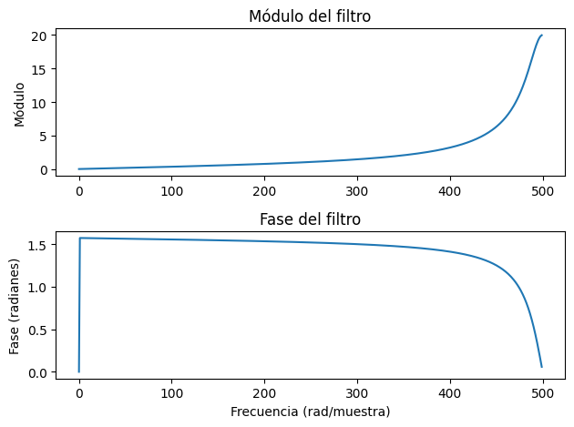

Simulaciones
[379]:
import numpy as np
import matplotlib.pyplot as plt
from scipy.signal import freqz, lfilter, group_delay
def plot_filter_digital(b, a, fs):
# Frecuencia de respuesta (para ver el módulo y fase del filtro)
w, h = freqz(b, a, fs=fs)
# w = w * fs / (2 * np.pi)
# Mostrar el módulo y la fase del filtro
plt.figure()
plt.subplot(2, 1, 1)
plt.plot(w, np.abs(h))
plt.title('Módulo del filtro')
plt.ylabel('Módulo')
plt.subplot(2, 1, 2)
plt.plot(w, np.angle(h))
plt.title('Fase del filtro')
plt.ylabel('Fase (radianes)')
plt.xlabel('Frecuencia (rad/muestra)')
plt.tight_layout()
w, gd = group_delay((b, a), fs=fs)
# Graficar el retardo de grupo
plt.figure()
plt.plot(w, gd)
plt.title('Retardo de grupo del filtro')
plt.xlabel('Frecuencia (rad/muestra)')
plt.ylabel('Retardo de grupo (muestras)')
plt.grid()
plt.tight_layout()
plt.show()
def plot_filter_signal(b, a, input):
# Aplicar el filtro a la señal rampa
salida = lfilter(b, a, input)
# Graficar señal de entrada y filtrada
plt.figure()
plt.subplot(2, 1, 1)
plt.stem(input)
plt.title('Señal de entrada')
plt.xlabel('Muestra')
plt.ylabel('Amplitud')
# plt.xlim((0, 100))
# plt.legend()
plt.subplot(2, 1, 2)
plt.stem(salida)
plt.title('Señal filtrada')
plt.xlabel('Muestra')
plt.ylabel('Amplitud')
# plt.xlim((0, 100))
# plt.legend()
plt.show()
[380]:
# Parámetros de la señal senoidal
fs = 1000
# frecuencia = 50/fs # Frecuencia de la señal en Hz
frecuencia = 350
t = np.arange(0, .1, 1/fs) # Vector de tiempo de 1 segundo
amplitud = 1 # Amplitud de la señal
fase = 0 # Fase inicial en radianes
# Generar señal senoidal
senoidal = amplitud * np.sin(2 * np.pi * frecuencia * t + fase)
[381]:
b = [1,1,1]
a = [1]
plot_filter_digital(b, a, fs)
plot_filter_signal(b, a, senoidal)

[382]:
b = [1,-1]
a = [1]
plot_filter_digital(b, a, fs)
plot_filter_signal(b, a, senoidal)
/tmp/ipykernel_10988/4043758896.py:27: UserWarning: The group delay is singular at frequencies [0.000], setting to 0
w, gd = group_delay((b, a), fs=fs)


Verificacion de diferenciador de segundo orden
[383]:
b = [1, -2, 1]
a = [1]
plot_filter_digital(b, a, fs)
plot_filter_signal(b, a, senoidal)
/tmp/ipykernel_10988/4043758896.py:27: UserWarning: The group delay is singular at frequencies [0.000], setting to 0
w, gd = group_delay((b, a), fs=fs)


[384]:
b = [.9]
a = [1, -.1]
plot_filter_digital(b, a, fs)
plot_filter_signal(b, a, senoidal)


[385]:
DC = 1
b = [1,-1]
a = [1,.9]
plot_filter_digital(b, a, fs)
plot_filter_signal(b, a, senoidal + DC)
/tmp/ipykernel_10988/4043758896.py:27: UserWarning: The group delay is singular at frequencies [0.000], setting to 0
w, gd = group_delay((b, a), fs=fs)


[386]:
D = 0.5
R = -D/(D+2)
b = [R, 1]
a = [1, R]
plot_filter_digital(b, a, fs)
plot_filter_signal(b, a, senoidal)


[387]:
b = [1, 0, 1]
a = [.8, 0, 1]
plot_filter_digital(b, a, fs)
plot_filter_signal(b, a, senoidal)
/tmp/ipykernel_10988/4043758896.py:27: UserWarning: The filter's denominator is extremely small at frequencies [1.571], around which a singularity may be present
w, gd = group_delay((b, a), fs=fs)
